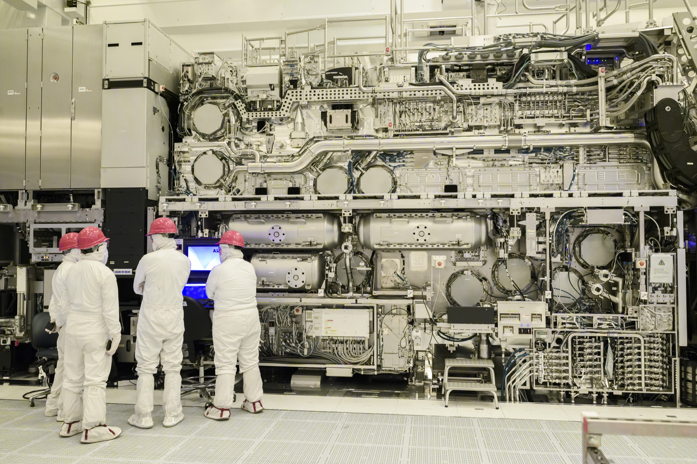
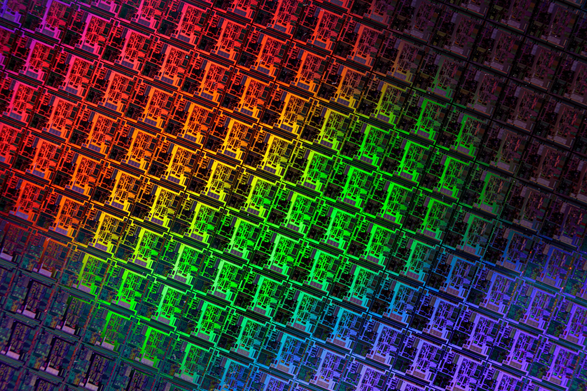
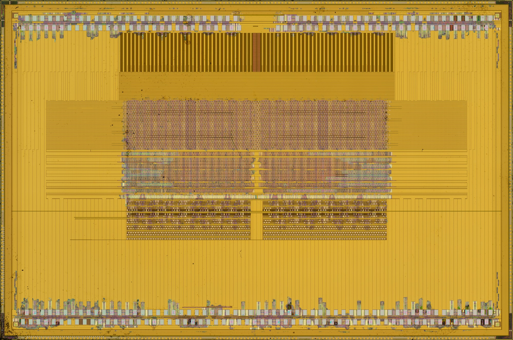
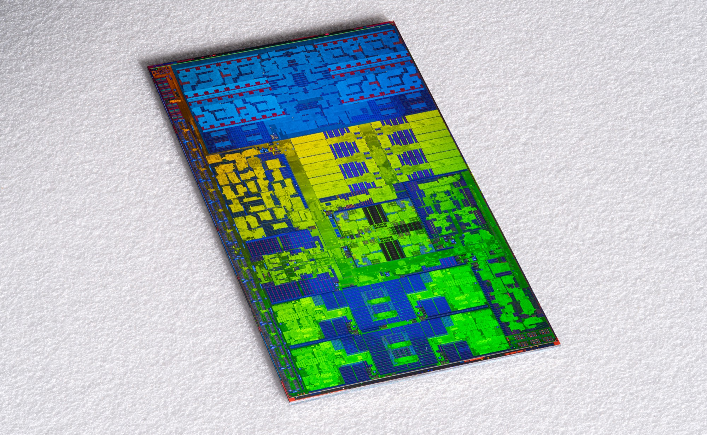
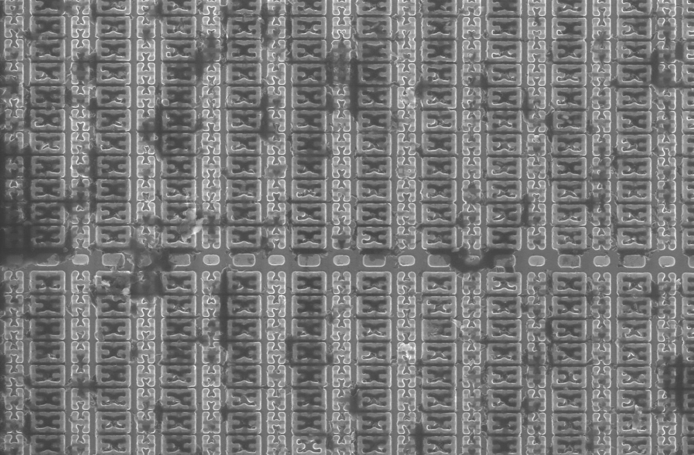
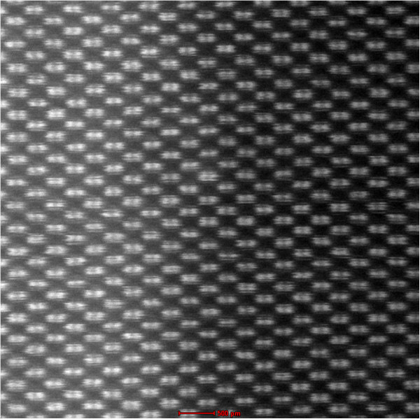

The chips that run the world are printed by the most complicated machine humans build, and they end in patterns of single atoms. Here is the whole way down, in the highest resolution I could find.
Every image is a real photograph or micrograph, shown as large as it comes. Click or tap any one to zoom all the way in. scroll to begin
The machine · ASML TWINSCAN EXE, High-NA EUVThis is an ASML High-NA EUV scanner, a TWINSCAN EXE, photographed at Intel, which in 2024 became the first chipmaker to take delivery of one. It prints the patterns on nearly every advanced chip on Earth, and only ASML knows how to build it: about $380 million each, and the whole world has only a handful.

Inside the scanner · the same High-NA EUV machineThe same machine, closer in. It ships in dozens of freight containers and is bolted together on site over months. The mirrors that steer its light, ground by Zeiss, are the flattest objects ever made: blown up to the size of Germany, the biggest bump would be under a millimeter.The cleanroom · Intel, before the EUV toolThis is Intel's cleanroom, the team gathered in front of that same High-NA EUV machine. The air in here is thousands of times cleaner than a hospital's, and the bunny suits protect the chip from the people, not the other way around: a single flake of skin lands like a boulder across the circuitry.The light · laser-produced tin plasma · 13.5 nmThis is an illustration of how that light is made (from an open-access physics paper). The machine fires a laser at a droplet of molten tin 50,000 times a second, and each hit flashes into plasma glowing at 13.5 nm. That light is so short it is swallowed by air and even by glass, so the whole path runs in a vacuum, off mirrors.
300 mm
The wafer
The wafer · a 300 mm silicon-photonics waferThis is a 300 mm silicon-photonics wafer: a dinner-plate disc sliced from a single crystal of silicon, grown from melted, purified sand and refined to about 99.9999999 percent pure, nine nines.

One wafer · hundreds of chips at onceThis is a finished wafer photographed up close; which exact chip it carries was not recorded. Hundreds of identical dies are printed in one pass, then sawn apart, and the rainbow is a clue to the scale: ordinary light bending off circuit features finer than its own wavelength.
~12 mm
The chip
One chip · Apple M1, TSMC, 2020 · ~16,000,000,000 transistorsThis is the Apple M1, the processor in the 2020 MacBook Air, built by TSMC. Smaller than a fingernail, it holds about 16 billion transistors; the largest chips now cross 100 billion, brushing past your brain's roughly 86 billion neurons. Your 100 trillion synapses still win.

The surface · NVIDIA GP100 / Tesla P100, 2016This is part of NVIDIA's GP100, the chip behind the 2016 Tesla P100, most likely one of the logic dies that sit beneath its stacked high-bandwidth memory. Up close a chip is a planned city: memory in dense regular blocks, logic in finer texture, bond pads around the rim. The gold is copper.

Built from tiles · Intel Lunar Lake, 2024This is Intel's Lunar Lake, a 2024 laptop processor. The newest chips are no longer one slab but several separate tiles, each made on the process that suits it, then wired together into one package. Tilt it to the light and its stacked layers split the light into color, like an oil slick.

Smaller than light · STM32 microcontroller, 2007This is the inside of an STMicroelectronics STM32 microcontroller, a line first sold around 2007, decapped and put under a scanning electron microscope, because the features are now smaller than a wavelength of visible light and an ordinary camera goes blind. Each little block is a memory cell, a few transistors, repeated millions of times.
below a wavelength of light
Smaller than the eye can ever see
The wiring · Intel 14 nm, 2014, cross-sectionThis is a cross-section of Intel's 14 nm wiring stack, a process Intel began making chips on in 2014 (from an open-access paper): more than a dozen floors of copper stacked above the transistors. Unspooled, the wires in a single chip would run for tens of kilometers, all folded into a fingernail.The transistor · ring-gate, radiation-hardenedThis is the thing itself, repeated billions of times: the transistor, a switch with no moving parts. These particular ones have round ring gates, a design that shrugs off radiation so the chip can work in orbit. The transistors in your phone are far smaller, a few dozen nanometers, flipping on and off billions of times a second.
~0.5 nm
The atom
The atoms · silicon, down the [110] axis · ~0.5 nm apartThis is silicon itself, imaged atom by atom (a ptychographic reconstruction, false-colored). You are looking straight down the crystal's [110] direction; each bright dot is a column of silicon atoms, the rows about half a nanometer apart. We have reached the bottom, the pieces the whole machine exists to arrange.

The floor · silicon dumbbells, STEMThis is a scanning transmission electron microscope image of silicon; each bright pair, a dumbbell, is two side-by-side columns of atoms (the scale bar reads 500 picometers, about the width of two atoms). The thinnest working layers in a chip are only a handful of atoms thick; smaller, and electrons tunnel straight through. The whole $380 million machine, the disc of pure sand, the city of copper, exists to place these dots, a few atoms at a time, a hundred billion times over.